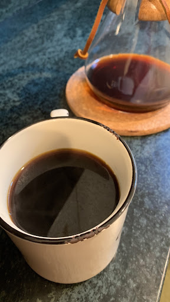

Chemex Coffee

Description
How to make coffee in a Chemex Coffeemaker.
Ingredients
- 42g Course Ground Fresh Coffee
Steps
- Heat water in goose neck kettle to 205°
- Place Chemex on kitchen scale and insert filter
- Tear scale and add ground coffee (total weight 42g)
- Pour water evenly to saturate grounds (total weight 150g)
- Allow coffee to bloom 30-45 seconds
- Pour water evenly and slowly (total weight 450g)
- Allow coffee to reintegrate for 60 seconds
- Pour water evenly and slowly (total weight 700g)
- Allow coffee to brew, approximately 4 minutes